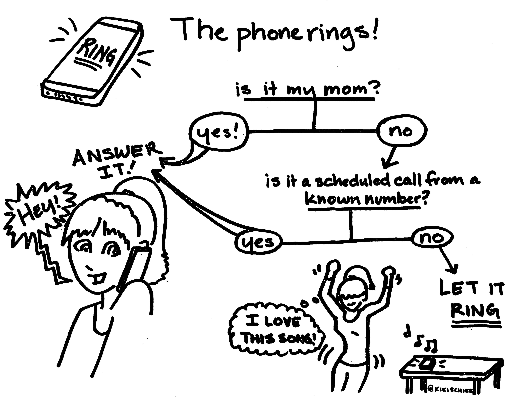

8 Frequently Asked Questions
Below you’ll find answers to the questions that I get asked the most by students in my classes. I have been asked every single one of these questions.
Before asking a question, please check if it’s already answered here. If you can’t find your answer, feel free to post on the class discussion board.
I don’t want to discourage you from asking questions. However, asking me is not an efficient method for finding facts and searchable information…
8.1 General Course Questions
8.1.1 How can I get ahold of you?
Face2Face: Green 438
Calendly Appointments: https://calendly.com/smasongarrison
Email: garrissm@wfu.edu
Text: 267.357.4392
Twitter: https://twitter.com/SMasonGarrison
Phone Call: …

Credit: Kiki Schirr at Tech Doodles on “Why this millennial didn’t answer your call”
8.1.2 Where can I find the reading list for the entire semester?
You can find the suggested readings for each module either on canvas or the GitHub course notes.
8.1.3 Where can I find when assignments are due?
You can find due dates in the syllabus and on canvas.
8.1.4 Where can I check the closing time of assessments?
You can check the due time and closing time of assessments by clicking the corresponding page in “Modules”.
8.1.5 How much time should I spend on one class every week?
The general rule of thumb is that you should spend 2-3 hours outside of class for every hour you spend in class. This means that for a 3-credit course, you should spend 6-9 hours per week on that course.
(Under the standard “Carnegie Unit”, each credit hour corresponds to a minimum of 3 hours of student engagement per week for a traditional 15-week course. See the WFU registrar for more details.)
8.2 Grading and Assignments
8.2.1 Where are my grades?
You can find your grades on canvas, under the “Grades” section. I will not look up this grade for you. You are all hard-working and problem-solving students. I believe in you!
8.2.2 Can you bump up my grade?
No. Please don’t grade grub. Don’t ask for extra credit or special opportunities to boost your grade. No. Please don’t. Seriously, don’t do it at the end of the semester. Don’t ask for extra credit or special opportunities to boost your grade. Please don’t pull on my heart strings about how you need a certain grade or there will be consequences for you. I know that many students think that it doesn’t hurt to ask. It does. It hurts me. Although I care deeply about my students, I have to say no because it isn’t equitable. So please don’t ask for the grade boost. Seriously, I get enough emotional manipulation from my cats for leaving them at home all day.
8.2.3 Can you calculate my grade for me?
No. You are capable of calculating a weighted average. You have all the information you need in the syllabus. If you need help, try this website: https://thegradecalculator.com/
8.2.5 Why is the locked?
To unlock the activity/module, you need to complete all the listed requirements. Double check that you’ve complete all the requirements to unlock it.
8.2.6 Why do I have to meet with you if I want to see my test again?
My tests/quizzes and grading rubrics take a long time to make. While I’m happy to show you both your test and the rubric used to grade it, I can’t share those publicly.
8.2.7 How do I ask professors for extensions?
Until I became a professor, I didn't realize that students can (and do) regularly ask for extensions.
— Betty S. Lai, PhD (@BettySLai) November 2, 2021
This means some students know how to use this strategy to support their learning, some don't.
Sharing info so everyone has access to the same tools. A thread. @OpenAcademics
8.2.8 Can’t you just tell me my letter grade? Your curve is confusing.
The curve can only help you. It means I can lower the thresholds for letter grades, but not raise them. Your best approach is to pretend that there is no curve.
8.2.9 Does it hurt to ask…
Yes, it actually DOES hurt to ask. If you know your Prof or the syllabus has a specific policy on something, but you ask for a special exception to be made for you anyway under the idea, “it doesn’t hurt to ask,” let me just tell you, yes—it really does. It can make you look bad, it can burn bridges, my goodwill & grace, and connections you may need later. Please don’t ask your profs for special treatment or to disregard syllabus policies they are required to adhere to.
8.2.9.1 Where are my grades?
You can find it on canvas, under grades. I will not look up this grade for you. You are all hard working and problem-solving students. I believe in you!
8.2.9.3 Where can I find help for canvas?
If you’re having trouble with Canvas, you should first search the Canvas Guides and then reach out to canvas support. Although I am not Canvas tech support, I have provided some answers and resources to commonly asked questions in a later [section][canvas].
8.2.10 Where can I find textbooks and course materials?
- If you’d like to purchase materials, you can do so from any bookstore, including Wake Forest’s.
- If you’d like to rent materials, you can do so from anywhere you’d like, including Wake Forest’s Bookstore or the publisher.
- If you’d like to get materials for free, you can borrow the materials from the library course reserve.
- If you’d like to get materials for free, you can borrow the materials from someone who’se already taken the course.
- Obviously, I can’t recommend finding the materials online…
Once again, I DO NOT recommend students go to libgen (dot) rs and download books for their upcoming courses. I am NOT advocating for getting and sharing free pdfs of required texts. DON'T DO IT.
— itsgalo 🗯 (@GaloAndStuff) August 9, 2021
8.2.11 Can…
8.2.11.1 Can I rent the textbook for this course from somewhere (Amazon, bookstores, etc.)?
Of course. You can rent the book from Amazon or anywhere else you’d like.
8.2.11.2 Can you calculate my grade for me?
No. I believe in you!
You are capable of calculating a weighted average. You have 100% of the information you need to do so as outlined in the syllabus. You can calculate your grade using a weighted average and the weightings in the syllabus. If you really really need help with this, try this website.
8.2.12 Why…
8.2.12.2 Why do I have to meet with you if I want to see my test again? Why can’t you just release them?
Unfortunately, my tests/quizzes take a long time to make as do the rubrics I use to grade. So although I’m happy to show you both your test and the rubric used to grade it, I can’t share those publicly.
8.2.12.3 How much time should I spend on one class every week?
The time you spend on a class can vary. No two instructors will format their classes exactly the same. Nevertheless, under the standard [“Carnegie Unit”] (https://www.carnegiefoundation.org/faqs/carnegie-unit/), each credit hour corresponds to a minimum of 3 hours of student engagement per week for a traditional 15-week course. This time may be spent on discussions, readings, and lectures, study, and research, and assignments. See the WFU registrar for more details if you’d like
If you find yourself spending a lot more or a lot less than 9 hours per week on this class, please let me know. That probably means that either you’re doing too much or too little.
8.3 Technical Issues
8.3.1 How do I use Canvas for class?
Students will use Canvas to access course content. All work/assignments/projects will be distributed and collected through Canvas.
8.3.2 I’m having trouble with Canvas – help!
If you’re having trouble with Canvas, you should search the Canvas Guides and then reach out to canvas support.
8.3.3 How do I contact the Canvas Help Desk?
You can search the Canvas Guides or contact the Canvas Support Helpline by clicking the Help icon (circle with a question mark) in the Account menu.
8.3.4 Where can I find more information about WFU technology services or resources?
- WFU technology services: https://is.wfu.edu/student/
- WFU’s Service Status Dashboard: https://status.is.wfu.edu/
8.3.5 I’m having trouble with a specific problem, can you fix it for me?
Troubleshooting is an essential skill. Please try basic troubleshooting to fix your problem. If you still have trouble, post the problem to the discussion board and clearly describe what you have already tried.
8.3.6 How long are the videos?
You can check the length of the module playlist using this website: https://ytplaylist-len.herokuapp.com/. Each module has 1 week worth of lectures.
8.3.7 Why are there so many videos?
I’ve sliced up the content into smaller chunks. If you want to watch the entire module in one sitting, you can use the youtube playlist.
8.3.8 Why is this so much more work compared to face-to-face classes?
It may feel like more work, but it actually isn’t. This class covers the same content as the face-to-face version. On average, you should expect to spend about 9 hours a week on this class. I have made every effort to not add to your workload. When I have added an assignment in one aspect of the course, I have removed something else from the class.
8.3.9 Why did a question I asked via email show up on the discussion board?
When students email me questions that should have been asked on the discussion board, I forward the email chain to my TA and ask them to post it.
8.3.10 I’m having a trouble with a specific problem, can you fix it for me?
If you are my grandmother, then yes. Otherwise… Troubleshooting or problem solving is an essential skill. Like anything else related to technology, problems will occur with virtual learning. And it is part of your job as a student to troubleshoot your problem.
Please try basic troubleshooting to fix your problem.
If you still have trouble after troubleshooting, post the problem to the discussion board and clearly describe what you have already tried.
8.4 Miscellaneous Questions
8.4.1 Why is your speaking style so weird?
I get this comment frequently enough in course evaluations (but never face-to-face…). Most students don’t have a problem with it, and it seems that most people recognize that it is outside my control. My speaking style can become a bit fragmented – students tend to describe it as tangential, scattered, incomprehensible (also some much less kind things… that are often really ableist). But that’s not actually, what’s happening… what’s happening is a mixture of cluttering and some other less well-known speech dysfluencies. Practically, this means I will on occasion skip the last syllable in a word or the last word of a sentence or repeat a phrase.
I recognize that it can be frustrating. I hear you. I really do. I cannot help it. And trust me, I am frustrated by it as well.
Please, understand that there’s not much more I can do at this point. And I have done a lot.
What you are experiencing is the result of years of speech therapy and is a massive improvement. If you genuinely struggle to understand me, please TALK to me about it. I can connect you with resources, including my scripts, previous recordings of lectures. If those don’t help, we can work in the LAC to figure out an accommodation that works for both of us. PLEASE do not wait until after the course is over and complain after the fact. That is not helpful to anyone.